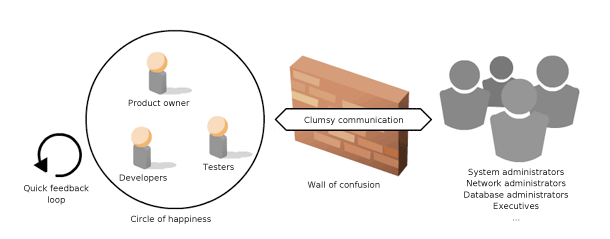
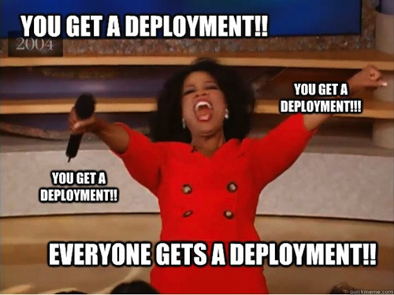

Chef ou Puppet?
O dilema do DevOps iniciante
O começo
# DevOps Days
Por que esta historia é importante?
DevOps Não é
- Um produto
- Um padrão
- Uma especificação
- Um cargo
DevOps é
Um movimento baseado em experiências
Experiências sobre como desenvolvimento e operações podem trabalhar juntos
DevOps veio para
Cobrir o gap entre desenvolvimento e operações
Introduzir agilidade no processo de deploy sem perder confiabilidade
Utilizar código e suas boas práticas em provisionamento e manutenção de infra
Dev vs Ops

http://blog.eriksen.com.br/sites/default/files/uploads/shared/wall-of-confusion-en.png
Deploys contínuos

http://i.qkme.me/3vpghd.jpg
Infra as code

http://www.opscode.com/blog/wp-content/uploads/2012/02/automate-all-the-things.png
Puppet vs Chef
Comunidade
Tecnologia
Configuração
Puppet quickstart (serverless)
$ vim test.pp
file { 'testfile-puppet':
path => '/tmp/testfile-puppet',
ensure => present,
mode => '0640',
content => "I'm a test file.\n"
}
$ puppet apply test.pp
Chef quickstart (solo)
$ cd /var/chef/cookbooks
$ knife cookbook create test
$ vim test/recipes/default.rb
file "/tmp/testfile-chef" do
mode "0640"
content "I'm a test file.\n"
action :create
end
$ chef-solo -o test -N test